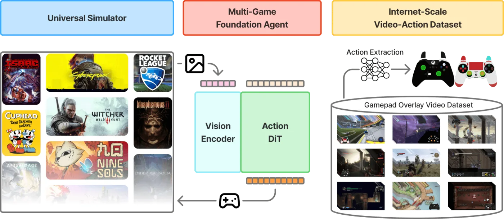
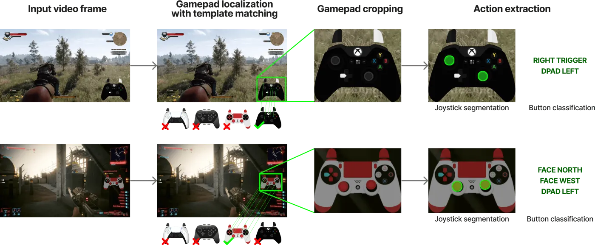
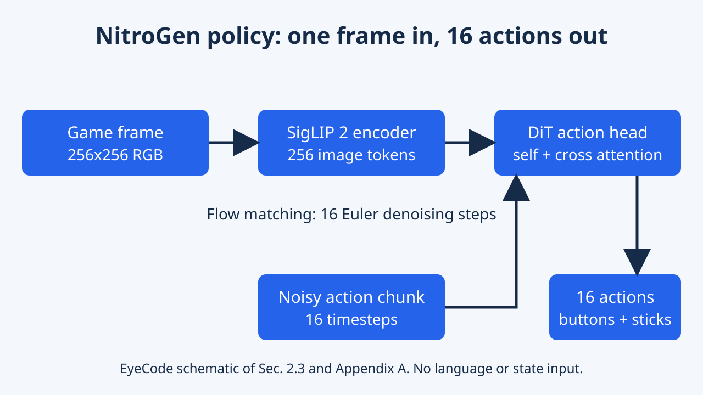
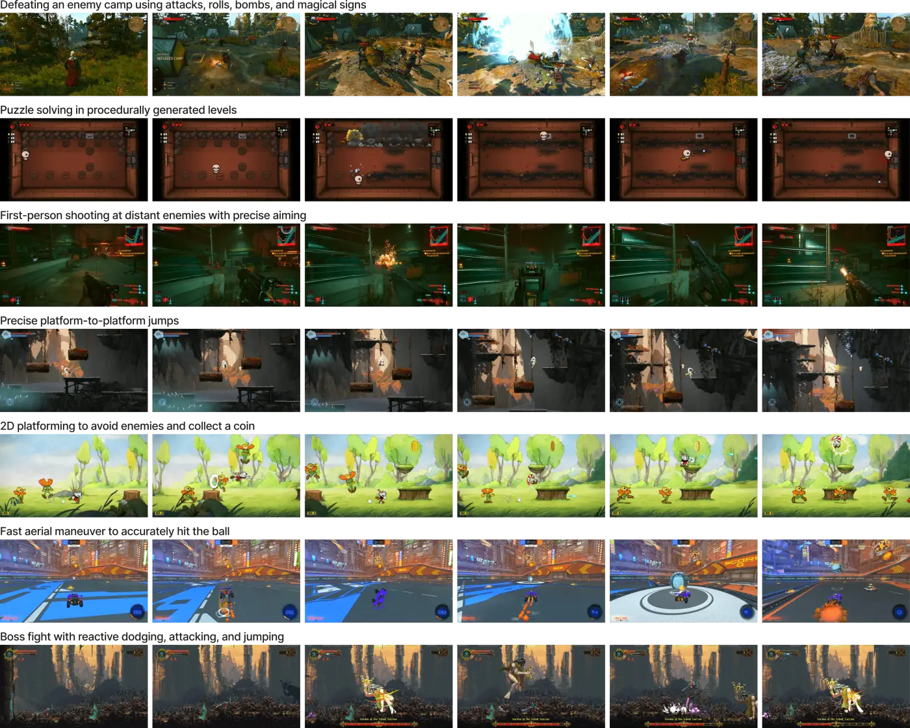
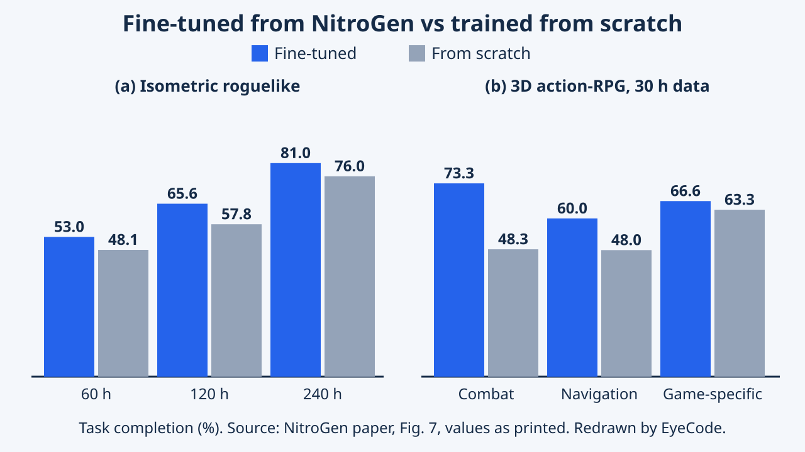

NitroGen: An Open Foundation Model for Generalist Gaming Agents
Studies vision–action agents across games. Actions extracted from gameplay video support behavior cloning and a multi-game evaluation environment for examining transfer to unseen games.
NitroGen is an open vision-action foundation model for gaming agents, released with an action-labelled video dataset and a 30-task, 10-game benchmark. This analysis explains how labels are mined from videos, how the policy works, what the numbers show and what the paper does not test.
Overview

NitroGen is a program that learns to play video games by watching other people play. Its teachers are gameplay videos in which the player's controller is drawn on the screen, so the program can see which buttons were pressed. After studying a huge pile of such videos, it can control many different games with a gamepad, and it learns a brand-new game faster than a program that starts from nothing.
NitroGen (Magne et al., from NVIDIA with Stanford, Caltech, UChicago and UT Austin) is a vision-action foundation model for gaming agents. It is trained by behavior cloning, that is, by imitating recorded players, on 40,000 hours of gameplay video covering more than 1,000 games. The paper releases three things: an action-labelled video dataset, an evaluation suite of 30 tasks in 10 commercial games with a Gymnasium-style wrapper, and the pretrained model.
The headline claim is that fine-tuning from the pretrained model beats training the same architecture from scratch on held-out games, by up to 52% relative at 30 hours of fine-tuning data in one game. The paper received a CVPR 2026 Best Paper Honorable Mention, according to the official Best Papers page; the evaluative remarks in this article are editorial.
Embodied AI lacks the internet-scale, action-labelled data that powered vision and language models. NitroGen attacks this bottleneck with three contributions: (1) a dataset built by reading actions out of input overlays that creators display on their gameplay videos; (2) a universal simulator that wraps commercial games in a Gymnasium API, plus a benchmark of 30 tasks across 10 games; (3) a single flow-matching vision-action transformer trained by behavior cloning on the dataset.
The authors call it the largest labelled video-action dataset for video games. Related work they cite: VPT labelled 70,000 hours of Minecraft by inverse dynamics, and the concurrent Game-TARS trains on 20,000 hours that combine contractor data with multimodal reasoning data. The setting here is deliberately narrow, with one RGB frame in, gamepad actions out and no language, so the study isolates what action pretraining alone provides. The official recognition is the Honorable Mention listed by CVPR 2026; everything else here is editorial interpretation.
Research Problem
To train a game-playing program you need many examples of a screen paired with the buttons a player pressed. Such collections are rare and small. Older game bots were usually trained for one single game, which is slow and expensive, so each one was good at only one thing.
Language and vision models gained generality from internet-scale data. Embodied agents have no equal, because large collections of observations paired with the actions actually taken are hard to obtain. Games offer rich, varied worlds, yet earlier approaches were narrow: reinforcement-learning agents are strong in single games but costly and need dedicated simulators; LLM-based agents depend on hand-built interfaces to game state; behavior cloning from pixels relied on expensive demonstrations, limited to a few titles.
The problem has three parts. Data: get action labels at internet scale without paying people to record them. Evaluation: measure generalization across games with different visuals and controls. Modeling: map one frame to gamepad actions with a single policy and test whether pretraining helps on an unseen game under a fixed data and compute budget.
Formally, the policy sees a single 256 by 256 RGB frame and outputs a chunk of 16 future gamepad actions in a shared action space for every game. There is no language goal, no proprioceptive state and no history beyond that one frame; the authors report no benefit from adding more past frames, even with larger temporal gaps, which they attribute to the initial state of these action games already carrying enough context.
Why prior work falls short, in the authors' framing: LLM agents need programmatic APIs or heavy perception modules; reinforcement learning (StarCraft II, Dota 2) is narrow and needs simulators that rarely exist for arbitrary games; behavior-cloning datasets such as MineRL or VPT cover one or few games. The authors also stress that no open framework existed for training and evaluating generalist gaming agents.
- Data challenge: overlays vary in controller type, transparency and compression, and recordings rarely include the player inputs.
- Evaluation challenge: commercial games have no programmatic interface and heterogeneous mechanics.
- Modeling challenge: labels are not ground truth, so the policy must tolerate noise.
Key Idea
Some players show a picture of their controller in a corner of the video, with pressed buttons lighting up. NitroGen reads that picture frame by frame and turns the video into a lesson: given this screen, press these buttons. Then it hides the controller picture so the learner has to work from the game itself.
The central idea is to use videos where creators display an input overlay, a small 2D picture of a gamepad with pressed buttons highlighted. A three-stage vision pipeline finds the overlay, reads joystick and button states for every frame and filters the result, producing action labels for tens of thousands of hours. One generalist policy is then trained on all of it, with the overlay masked in the frames, and tested by fine-tuning on a game held out of pretraining.
A tiny example: in a boss fight, the overlay shows the right stick pushed up and the A button lit. The label for that frame is those two inputs; the model learns to produce them from the game picture alone.
Three design choices carry the paper.
- Weak supervision from overlays: a visual readout of the controller is used as the label, trading exactness for scale. Overlay software introduces small delays and parsing adds error, so labels are noisy.
- One shared action space: 16 binary buttons (4 d-pad, 4 face, 2 shoulders, 2 triggers, 2 thumb-stick presses, start, back) plus 4 continuous joystick values, identical for every game, in contrast with prior game-specific action spaces.
- A universal simulator: a Gymnasium wrapper that intercepts the game's system clock so the game can be advanced frame by frame while the model thinks, with no change to game code.
Differences from prior work: VPT recovers labels with a trained inverse-dynamics model on one game (Minecraft); NitroGen obtains labels from a visual readout across 1,000+ games. It also drops language conditioning, unlike vision-language-action robot models.
Methodology


Step one, find videos with a visible controller. Step two, read the controller to get button labels. Step three, teach a neural network to guess the next few button presses from the current screen picture. Step four, let it play inside a wrapper that pauses the game while it thinks.
Data pipeline. The authors collected 71,000 hours of raw video with overlays; after filtering the dataset holds 40,000 hours, from 38,739 videos by 818 creators. Stage 1 samples 25 frames per video and matches them against about 300 controller templates using SIFT and XFeat features, accepting a match with at least 20 inliers. Stage 2 feeds two consecutive frames to a fine-tuned SegFormer that outputs joystick positions on an 11 by 11 grid and binary button states. Stage 3 keeps only chunks where at least half the timesteps have a non-zero action, which retains 55% of the data, and masks the on-screen controller.
Policy. The design is adapted from GR00T N1 with language and state encoders removed. A SigLIP 2 vision transformer turns one 256 by 256 frame into 256 tokens. A diffusion transformer, whose layers alternate self-attention and cross-attention to those tokens, denoises a chunk of 16 actions with conditional flow matching and 16 Euler steps. The model has about 500M parameters. Predicting chunks improves temporal consistency compared with single actions, per the authors, who give no number for this.
Parser training. The SegFormer is trained on 8M synthetic frames made by overlaying controller templates from three overlay programs on frames of the dataset with random button states and joystick positions, varying opacity, size and compression. Optimizer: AdamW, learning rate 0.0001 with linear decay, weight decay 0.1, batch size 256. Joysticks are predicted by segmentation on a discrete grid, which the authors found significantly better than regressing coordinates. At inference, joystick centers are estimated from frames classified as centered and positions are normalized to [-1, 1] by the 99th percentile of absolute values per video.
Policy training. With action chunk $a$ (16 steps), observation $o$, noise $\varepsilon$ and flow time $t$, the noisy action is $a_t=(1-t)a+t\varepsilon$ and the DiT is trained to predict the velocity $\varepsilon-a$ with a squared error; $t$ is drawn from a shifted beta distribution that favors small timesteps. Inference starts from Gaussian noise and takes $k=16$ Euler steps; more steps gave no measurable improvement. Noisy action chunks pass through an MLP into one token per timestep, then through DiT blocks, and an MLP decodes each token independently across time.
- Augmentations: brightness, contrast, saturation, hue, rotation within 5 degrees, random crops.
- AdamW with weight decay 0.001; warmup-stable-decay schedule with constant learning rate 0.0001; EMA of weights with decay 0.9999, and all results use EMA weights, which the authors say consistently beat non-EMA weights.
- Compute budget and training hours for the pretrained model are not stated in the paper text.
Action-space dimension. The text of Section 2.2 gives 16 binary buttons plus 4 continuous joystick values (20 numbers per step), while Appendix A writes the action chunk as living in a 16 by 24 space, and the Hugging Face model card describes a 21 by 16 output (two 2D joystick vectors and 17 binary buttons). The 16 matches the chunk length in all three; the per-step dimension differs (20, 24, 21). The paper does not explain this, so I report all three rather than choose one.
Experiments & Results
| Game family | Combat | Navigation | Game specific |
|---|---|---|---|
| 3D | 61.2 | 55.0 | 56.3 |
| 2D top-down | 46.0 | 52.0 | 61.5 |
| 2D side-scrolling | 44.8 | 37.9 | 54.0 |
| Setting | Fine-tuned from NitroGen | Trained from scratch | Relative gain |
|---|---|---|---|
| Roguelike, 60 h | 53.0 | 48.1 | +10.2% |
| Roguelike, 120 h | 65.6 | 57.8 | +13.5% |
| Roguelike, 240 h | 81.0 | 76.0 | +6.6% |
| Action-RPG, combat | 73.3 | 48.3 | +51.8% |
| Action-RPG, navigation | 60.0 | 48.0 | +25.0% |
| Action-RPG, game specific | 66.6 | 63.3 | +5.2% |
| Controller family | Joystick R squared | Button frame accuracy |
|---|---|---|
| Xbox One | 0.92 | 0.98 |
| Xbox 360 | 0.91 | 0.93 |
| PS3 | 0.85 | 0.97 |
| PS4 | 0.84 | 0.91 |
| Xbox Series X | 0.79 | 0.98 |
| PS5 | 0.77 | 0.97 |
| Average | 0.84 | 0.96 |


After watching lots of games, the model can already do simple things in many games without extra training. When given a little extra practice on a new game, it learns faster than a model that started from nothing, mostly in fighting and moving around. The tables below show the numbers.
Protocols. The action parser was checked on gameplay recorded from six games with randomized overlay opacity, size and type: average joystick R squared is 0.84 and average button frame accuracy 0.96 (Table 3 below). The pretrained model was evaluated without fine-tuning on 3 tasks per game with 5 rollouts per task, with success judged by humans (Table 1). For transfer, one game was held out of pretraining, then fine-tuned and compared with the same architecture trained from scratch with equal data and compute (Table 2). Baseline: only training from scratch; the paper compares with no other agent.
Headlines. Fine-tuning gave an average 10% relative gain over data sizes on an isometric roguelike and about 25% on a 3D action-RPG. At 30 hours of data on the action-RPG, the relative gain is 52% for combat, 25% for navigation and 5% for game-specific tasks.
Qualitative and caveats. Figure 4 of the paper shows rollouts in 2D and 3D games, from seconds to minutes long. The authors find no significant performance difference between tasks that can be memorized and tasks in procedurally generated worlds.
How to read the tables. Table 1 has no comparison system: it shows what one pretrained model achieves per game family, averaged over 3 tasks and 5 rollouts per game, so each cell rests on few rollouts, and the paper reports no variance or seeds. Table 2 is the only controlled comparison, and its relative gains are computed here from the printed bar values; they agree with the 10%, 52%, 25% and 5% quoted in the text, which is a useful consistency check (the 25% average over data sizes for the action-RPG has no per-size figure in the paper).
Interpretation by the authors. The smaller gain on the roguelike (about 10%) versus the action-RPG (about 25%) is attributed to the action-RPG being better represented in the training data (Action-RPG is 34.9% of dataset hours, Platformer 18.4%, Action-Adventure 9.2%, per Figure 3). Gains are largest for generic skills (combat, navigation) and marginal for game-specific mechanics, suggesting transferable common gameplay skills while specifics still need targeted training. In Table 2, the gain on the roguelike shrinks from 13.5% at 120 h to 6.6% at 240 h in our arithmetic, though with only three points and no variance this is an observation, not a finding.
Data and parser notes. Dataset statistics (Figure 3): 846 games have over one hour of data, 91 over 100 hours and 15 over 1,000 hours. The parser average hides spread by controller family (R squared 0.77 to 0.92; button accuracy 0.91 to 0.98). The paper lists noise sources: overlay delays and parsing error, creator artifacts such as stream chat or subscribe prompts, and differing controller mappings or sensitivity.
Not in the paper: an ablation on multi-game versus single-game pretraining, a comparison with other agents, results on more than two held-out games, and the identity of the held-out games. The 52% figure comes from one game, one data size and the combat subset.
Limitations
The model only reacts to what it sees right now. It cannot make long plans or follow instructions in words, and most of its practice came from action games played with a gamepad. The study also tests only two held-out games.
Reported by the authors
Section 4 states that NitroGen is a fast-reacting "system-1" sensory model: it cannot plan over long horizons or follow language instructions and only reacts to its short context. The dataset is biased toward action games and games typically played with a gamepad; keyboard-only games and those with complex manipulation are less represented, which may limit generalization to strategy or simulation games. Section 3 adds label noise from overlay delays, parsing inaccuracies, creator artifacts and differing controller mappings. The simulator needs games that use the system clock, and real-time or asynchronous deployment is left to future work. Transfer varied across games and task types. The repository says the agent runs only on Windows games.
EyeCode analysis (editorial interpretation)
The only baseline is the same model trained from scratch, and transfer is shown on two held-out games with human-judged success, so the results show a trend rather than a broad ranking. The weights are licensed for non-commercial use.
Reported by the authors
- System-1 reflex model: no long-horizon planning, no language following; future work is language post-training and reinforcement learning.
- Dataset bias toward action games and gamepad play; keyboard-only and manipulation-heavy genres underrepresented.
- Label noise from overlay delay, parsing error, creator artifacts and controller remapping.
- Simulator limits: works for titles that use the system clock; real-time or asynchronous deployment left for future work. Sensitivity of physics to pausing was checked; replays diverged after about a minute (continuous actions) or three minutes (discrete actions) with and without pausing, which the authors attribute to error accumulation.
- The model card states it works best on gamepad-designed games and is less effective on games dominated by mouse and keyboard (for example RTS and MOBA).
EyeCode analysis (editorial interpretation)
- Evidence breadth: one baseline (from scratch), two held-out games, rollout counts for fine-tuning not stated in the text, no variance; success judged by humans, which limits exact replication.
- Untested design claims: that action chunks improve temporal consistency and that more frames do not help are stated without numbers in the text.
- Unresolved inconsistency: the per-step action dimension appears as 20, 24 and 21 in different places (see Methodology).
- Reproducibility: the dataset card says reproducing the paper requires extra filtering such as idle-frame filtering, and the dataset holds action annotations for videos rather than the videos; the model is under an NVIDIA non-commercial license and the dataset under CC BY-NC 4.0.
Key Takeaways
Videos with a visible controller can be turned into huge training sets. Pretraining on many games gives a head start on a new game, especially for common skills like fighting and moving around.
Lessons the evidence supports:
- Overlays make action labels cheap at scale: 71,000 raw hours became 40,000 filtered hours over 1,000+ games.
- A parser can be trained on synthetic overlays and still read real ones, reaching 0.84 average joystick R squared and 0.96 button accuracy on the authors' test.
- One shared action space lets a single policy span many games.
- Under equal budgets, pretraining helped on both held-out games, most for combat and navigation and least for game-specific tasks.
- The model is reactive, not a planner.
Suggested directions (EyeCode suggestions, not claims from the paper)
- Test whether multi-game pretraining beats single-game pretraining at equal hours.
- Measure how much label noise matters by training on filtered versus raw labels.
Technical lessons:
- Weak supervision from a visual readout can replace manual collection, but needs idle-segment filtering: the authors note the raw data makes the model over-predict the null action.
- Masking the overlay prevents the policy from copying the label from the input.
- Segmentation on a discrete joystick grid outperformed direct coordinate regression, per the authors.
- Flow matching with 16-step action chunks, EMA weights and a single frame was enough for the benchmark; 16 denoising steps matched larger counts.
- Transfer is uneven and tracks how well the new game is represented in pretraining data.
Suggested directions (EyeCode suggestions, not claims from the paper)
- Ablate label quality: compare training on raw, filtered and manually corrected labels.
- Report variance across seeds and add more held-out games and external baselines.
- Add a language or planner layer over the reactive policy and test long-horizon tasks.